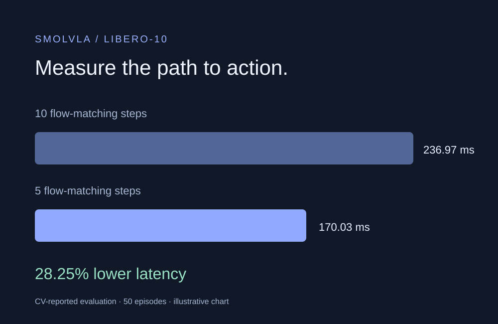

Original project pipeline
Original project pipelineLRLPR-26 · Post-competition
Multi-frame plate recognition
Combining five low-resolution frames before each recognition decision.
Open case study ↗CHANNEL 03 / VISION & EFFICIENT INFERENCE
Low-resolution recognition and efficient Vision-Language-Action inference.
Original project pipelineLRLPR-26 · Post-competition
Combining five low-resolution frames before each recognition decision.
Open case study ↗
Evaluation illustrationEyeCode Tech · SmolVLA
Evaluating latency, compute and task quality together in embodied models.
Open case study ↗